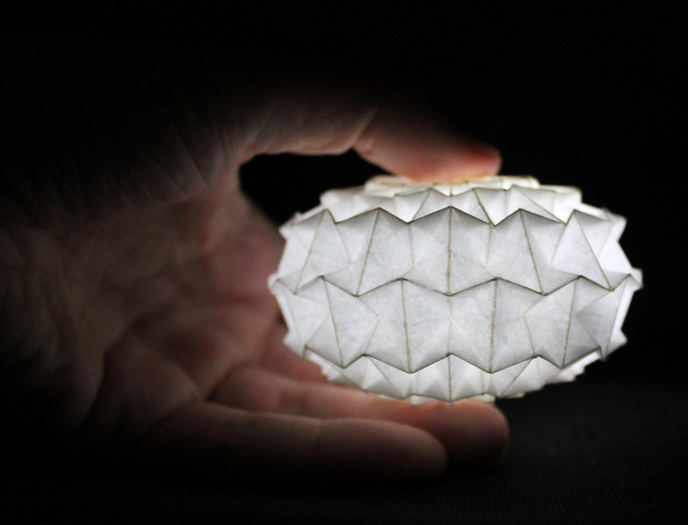
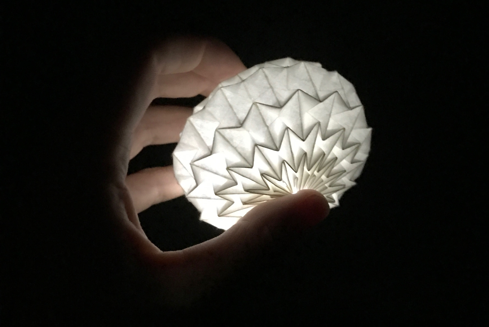
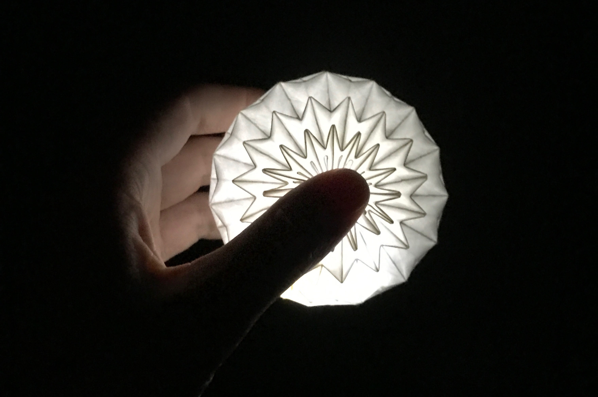

Folds
The natural world is filled with repetition: a few simple manipulations, when repeated enough times, create something surprising and complex.
Origami has a similar aesthetic. The materials and the manipulations are very simple. With my hands, I fold a single sheet of paper in one of two ways: as a "valley" fold or a "mountain" fold. Done repeatedly, these two simple actions turn a piece of paper into an object with volume, lines, flexibility, and movement.



